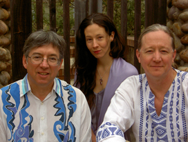

Kim Lorene
Kim Lorene grew up surrounded by the lush green forests of coastal British Columbia. She travels and shares her music throughout North America, Europe, and the U.K., always listening for the music that the earth has to share. Along the way she gathers stories and writes about the beauty and love found in nature, in people, in animals, and in the spirit which connects us all. With her deeply moving songs and her angelic voice, she connects with the heart of the listener and invites them to join her in a world filled with wonder and with the joy of being alive. Kim has been touring with Anton for ten years, most recently as featured artists at the annual UCSL and Unity Asilomar gatherings and at the Cirle of Love Gathering

Anton & Kim's Concerts
Mount Shasta recording artist, Anton Mizerak and Canadian singer-songwriter and guitarist Kim Lorene present concerts of transformational healing music along with Kim's insightful folk songs and chants from around the world.
Anton lives in Mount Shasta and writes his music in nature, believing that our organic experience of sun, wind, water, snow and earth, transmitted through music, can be a valuable nurturing and healing experience. Anton plays keyboards and harmonica. His music has been featured on the nationally syndicated radio show "Echoes" and on dish network and direct TV's New Age music programming. His latest CD "When Angels Dream"has been a top seller with healers and massage therapists. Many people have seen Anton at New Thought Churches, symposiums and retreats over the past ten years.
Kim Lorene grew up surrounded by the lush green forests of coastal British Columbia. She travels and shares her music throughout North America, Europe, and the U.K., always listening for the music that the earth has to share. Along the way she gathers stories and writes about the beauty and love found in nature, in people, in animals, and in the spirit which connects us all. With her deeply moving songs and her angelic voice, she connects with the heart of the listener and invites them to join her in a world filled with wonder and with the joy of being alive. Kim has been touring with Anton for ten years, most recently as featured artists at the annual UCSL and Unity Asilomar gatherings and at the Cirle of Love Gathering
For a print-ready jpeg of Anton Kim and the Instruments click HERE.
{kind=link}

Anton, Michael Mandrell & Kims Concerts
Mount Shasta keyboardist, harmonica and tabla player Anton Mizerak, Celtic guitarist Michael Mandrell and Canadian singer-songwriter Kim Lorene present concerts of Mount Shasta/Celtistani transformational healing music.
Michael Mandrell is known for his transcendent guitar playing. He has been featured on Public Radio International's Echoes with host John Diliberto.
Michael's blend of Celtic, Jazz and New Age music demonstrates just what a 6 and 12 string guitar can do in the hands of a real master. Touring with many fine acoustic ensembles as well as solo, Michael has shared the stage with such musical luminaries as Lyle Lovett, Nanci Griffith, Jenny Bird, Spyro Gyra, William Ackerman, and Shadowfax.
Anton Mizerak lives in Mount Shasta and writes his music in nature, believing that our organic experience of sun, wind, water, snow and earth, transmitted through music, can be a valuable nurturing and healing experience. Anton plays keyboards and harmonica. His music has been featured on the nationally syndicated radio show "Echoes" and on Dish Network's and Direct TV's New Age music programming. His latest CD series "When Angels Dream"have been a top sellers with healers and massage therapists. Many people have seen Anton at New Thought Churches, symposiums and retreats over the past ten years.
Kim Lorene grew up surrounded by the lush green forests of coastal British Columbia. She travels and shares her music throughout North America, Europe, and the U.K., always listening for the music that the earth has to share. Along the way she gathers stories and writes about the beauty and love found in nature, in people, in animals, and in the spirit which connects us all. With her deeply moving songs and her angelic voice, she connects with the heart of the listener and invites them to join her in a world filled with wonder and with the joy of being alive. Anton and Kim were the featured performers at the 2004 Seattle Sacred World Music Festival, and most recently as featured artists at the annual UCSL and Unity Asilomar gatherings and at the Cirle of Love Gathering
Their concerts will feature Michael's amazing guitar playing accompanied by Anton on tabla and harmonica along with Anton's original music Kim's insightful folk songs and chants from around the world.
For a print-ready jpeg of Anton, Michael Mandrell & Kim click HERE.
{kind=link}